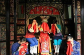
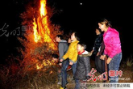
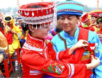

传统习俗



娘哭-独特的风俗
土家女子婚前要唱哭嫁歌，即在婚前半月至一月开始哭唱，其形式有一人哭、二人对哭、多人一起哭。哭唱的内容大多是：哭爹妈的养育之恩，兄嫂、姊妹别离之情
过社
过社是土家人最重要和最隆重的农事祭日，春社遗风在土家族等少数民族地区得以传承，而对秋社的重视程度远不如春社。
赶毛狗
农历正月十五夜，土家人张灯达旦“闹元宵”，取杉树枝，于宅外搭棚烧之，儿童大声呼逐，“赶毛狗，赶毛狗，一赶赶到张家大嫂灶门口，大嫂打个屁，毛狗子不成器”，谓“赶毛狗”或“赶毛九”，为土家独特风俗。


摆手舞
土家女子婚前要唱哭嫁歌，即在婚前半月至一月开始哭唱，其形式有一人哭、二人对哭、多人一起哭。哭唱的内容大多是：哭爹妈的养育之恩，兄嫂、姊妹别离之情
土家撒尔嗬
过社是土家人最重要和最隆重的农事祭日，春社遗风在土家族等少数民族地区得以传承，而对秋社的重视程度远不如春社。
女儿会
又名恩施土家女儿会，是恩施土家族特有的风俗习惯，也是男女青年谈情说爱的一种场所，被誉为东方情人节或土家情人节。一般每年的农历7月7日至12日这些天，是传统的“女儿会”吉日，最初流行于恩施石灰窑、大山顶一带，如今已发展成全州性的民族节日。
相关搜索
- 恩施结婚习俗
- 土家族习俗
- 土家族文化
- 中国文化
- 恩施春节习俗
- 土家族民歌
- 恩施
- 传统节日